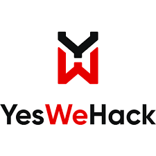
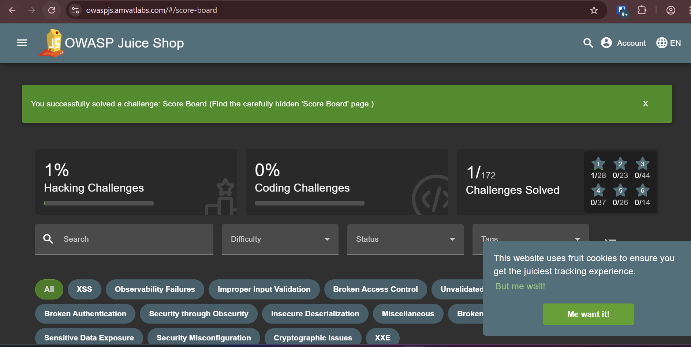
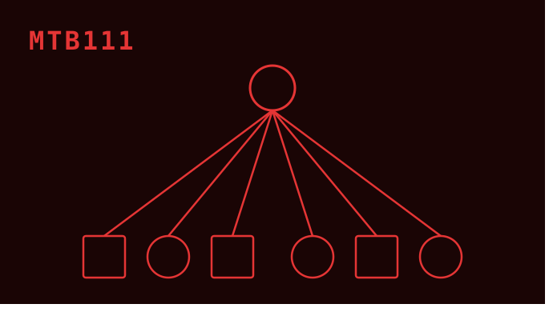
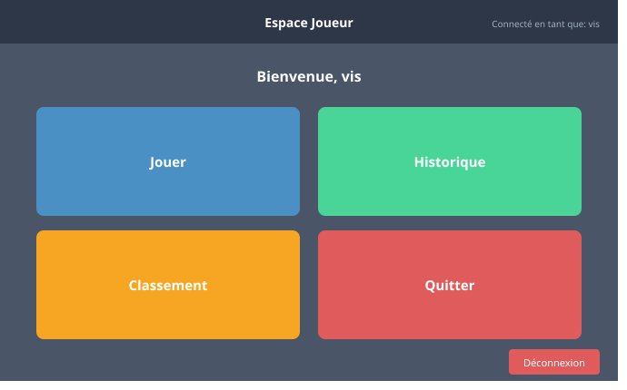
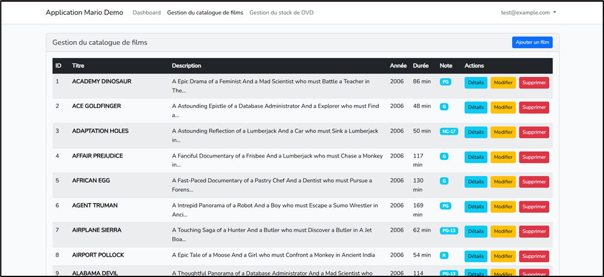
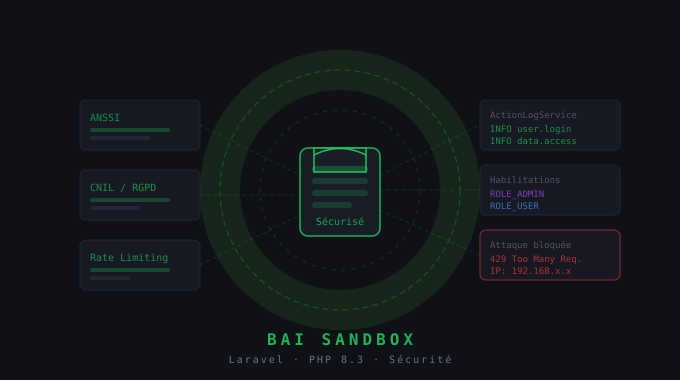
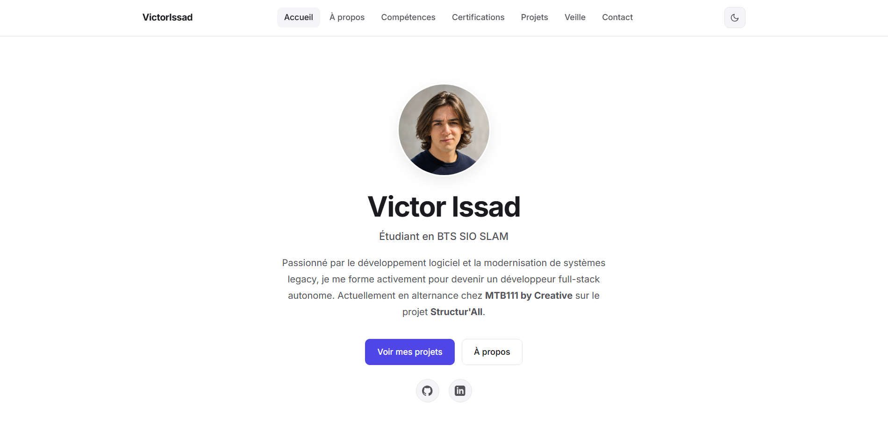

Cybersécurité · MTB111
YesWeHack — Bug bounty
Participation à un programme de bug bounty sur la plateforme YesWeHack. Recherche de vulnérabilités sur des cibles définies, rédaction de rapports.
En savoir plus →Réalisations professionnelles, scolaires et personnelles. Cliquez sur "En savoir plus" pour voir les détails techniques et les compétences mobilisées pour l'épreuve E4.

Participation à un programme de bug bounty sur la plateforme YesWeHack. Recherche de vulnérabilités sur des cibles définies, rédaction de rapports.
En savoir plus →
~100 défis CTF couvrant les catégories OWASP Top 10 : injection SQL, XSS, CSRF, authentification cassée, mauvaises configurations.
En savoir plus →
Rédaction des cahiers de recette et exécution des campagnes de tests fonctionnels sur la plateforme Structur'All Machine®.
En savoir plus →
Application Java/Spring Boot développée en équipe de 3 dans le cadre d'un projet scolaire. Jeu interactif autour de problèmes algorithmiques.
En savoir plus →Refactoring du système de logging de Structur'All — remplacement systématique de System.err par SAXLogger sur plusieurs centaines de fichiers Java.
En savoir plus →
Application complète de location de DVDs : app Android Luigi, API REST Spring Boot Toad, web Laravel Mario, base MySQL Peach.
En savoir plus →
Application Laravel 11 avec audit de sécurité complet (ANSSI, CNIL, RGPD), ActionLogService, rate limiting.
En savoir plus →
Portfolio web statique pour l'épreuve E4 du BTS SIO. HTML / CSS / JS vanilla, dark/light mode, design éditorial sobre. Vous le consultez actuellement.
En savoir plus →